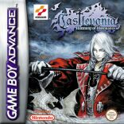
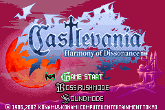
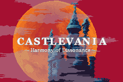
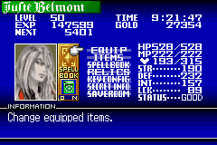
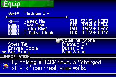
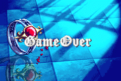

|
Castlevania
: Harmony of Dissonance

(ภาพนี้ Copy มาจากเว็บไซต์ของ Konami)
เกมนี้ออกวางขายเมื่อวันที่ 6 เดือนมิถุนายน ปี 2002 ภาค Japan ในระบบ GameBoy
Advance
ซึ่งได้วางขายในชื่อ Castlevania : Hakuya no Kyousoukyoku
ส่วนภาค English ได้ออกวางจำหน่ายเมื่อวันที่ 18 เดือนกันยายน ปี 2002 ในระบบ
GameBoy Advance
และได้เปลี่ยนชื่อเป็น Castlevania : Harmony of Dissonance
อีกทั้งยังได้ออกจำหน่ายในยุโรป เมื่อวันที่ 11 เดือนตุลาคม ปี 2002 ในระบบ
GameBoy Advance เช่นกัน
Harmony หมายถึง ความกลมกลืน, ความลงรอยกัน
ส่วน Dissonance หมายถึง ความไม่กลมกลืนกัน -_-"
สรุปว่า ภาคนี้หมายถึง ความเข้ากันได้ ของสิ่งที่ไม่น่าจะเข้ากันได้ : P
(* หมายเหตุ ภาค English และยุโรป เนื้อหาเหมือนกัน แต่ใช้ Code Breaker
ไม่เหมือนกัน)
Story
50 ปีผ่านไป หลังจากที่ Simon Belmont ได้ปราบ Dracula
ในตอนนี้ Juste Belmont ผู้ซึ่งเป็นทายาทสืบสกุล
ได้ออกค้นหา Relic ซึ่งเป็นชิ้นส่วนของ Dracula
เพื่อหาทางแก้ไขการหายสาบสูญไปของ Lydie เพื่อนในวัยเด็กของเขา
เขาต้องเข้าไปในปราสาทที่ทั้งอันตรายและน่าพิศวง
Title

ในตอนแรกจะมีเพียงคำสั่ง "GAME START" เท่านั้น
ต้องทำเงื่อนไขเสียก่อน จึงจะมีคำสั่ง "BOSS RUSH MODE" และ "SOUND
MODE" เพิ่มขึ้นมา
เมื่อเข้าสู่เกมจะพบกับ Title อีกอันหนึ่ง

Menu

ภาคนี้ตัวละครสามารเก็บประสบการณ์เพื่อเพิ่มระดับความสามารถได้
EQUIP - อีกทั้งยังสามารถเก็บสิ่งของเพื่อสวมใส่ได้อีกด้วย
ไม่ว่าจะเป็นแส้แบบใหม่ หรือชุดเกราะ
ITEMS - รวมทั้งมี item ให้ใช้ได้อีก
เช่น Potion เอาไว้สำหรับเพิ่ม HP
SPELLBOOK - ตัวละครสามารถใช้เวทมนต์ได้ด้วย
หากเก็บเวทย์มนต์นั้นๆ ได้
RELICS - เป็นสิ่งของที่เก็บได้ ใช้สำหรับเพิ่มความสามารถต่างๆ
ของ Juste
KEYCONFIG - ใช้ปรับเปลี่ยนปุ่มบังคับ
SECRET INFO - มี 2 คำสั่งย่อย
คือ ENCYCLOPEDIA กับ COLLECTABLE
SAVEROOM - ไว้สำหรับ Save ฉุกเฉิน (ของ GameBoy เมื่อจะปิดเครื่อง)
EQUIP

WHIP - คือ แส้ ที่สวมใส่ได้ มีให้เปลี่ยนมากมาหลายแบบ ความสามารถแตกต่างกัน
BODY - คือ เกราะที่สามารถสวมใส่ได้
ส่วน 3 อันด้านล่าง สามารถเปลี่ยนไปสวมใส่อะไรก็ได้
มีให้เลือก 4 ชนิด คือ HEAD, HANDS, LEGS, GOODS
ซึ่ง HEAD, HANDS, LEGS จะไม่สามารถสวมใส่ซ้ำกันได้
แต่ GOODS สามารถสวมใส่ซ้ำกันได้
Game Over

และแน่นอน หากตัวละครของคุณ HP เหลือ 0 ก็จะเจอกับฉากนี้
สรุป
เป็นเกม Action + RPG ที่สนุกอีกเกมนึง
ตัวเกมเล่นได้ไม่ยาก รูปแบบง่ายๆ
หากศึกษาตัวเกมสักหน่อยก็จะจบเกมได้สบายๆ
แต่ในตอนเล่นต้องเล่นแบบไม่ประมาท
แม้กราฟฟิค จะสวยงามสู้เกมบน PS หรือเครื่องระบบ CD อื่นๆ ไม่ได้
แต่ตัวเกมสนุก จึงไม่จำเป็นต้องคำนึงถึงเรื่องนั้นมากนัก
และหากเล่นกับ GameBoyAdvance จะมีระบบ Save ฉุกเฉิน
สามารถทำให้นำไปเล่นที่ไหนก็ได้
สรุปแล้ว แม้คุณจะไม่เคยเล่น Castlevania ภาคอื่นๆ มาก่อน
หากคุณเป็นคนชอบเกมแนว Action + RPG คุณจะชอบเกมนี้ครับ
ส่วนตัวผม ผมชอบเกมนี้มากๆ เลยครับ
|